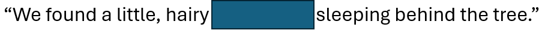
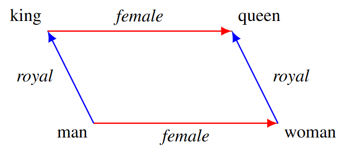

7 Foundational Principles
The following concepts helped me better understand how large language models work.
7.1 Co-occurrence
Before the transformer era, much of computational linguistics revolved around co-occurrence — the idea that words that appear near one another in text tend to share meaning (also called distributional semantics). The phrase “You shall know a word by the company it keeps,” from linguist J.R. Firth (1957)1, captures the essence. Counting how often “teacher” appears near “classroom” or “student” reveals something about the word’s semantics, even without fully understanding syntax or broader context.
An example can be useful here. In the following sentence, what is the masked word?

How did you come to your answer? You likely looked at the words surrounding the blank and made some inferences based on what you know about those words: “little,” “hairy,” and “sleeping” all provide helpful cues. Even “behind a tree” helps because it gives us context for size and habitat.
What if I told you that the masked word was “wampimuk”? How does that change things? In a sense, it does not really change things very much. We may not know what a “wampimuk” is, but we already have some sense of it because of the other words we expected to surround the masked word. In much the same way, this is partly how a generative AI model “understands meaning”—it recognizes patterns of words that commonly occur together because they occupy similar locations in a high-dimensional parameter space.
Modern models build on this intuition at massive scale. Early approaches like Word2Vec2 and GloVe3 trained models to detect statistical relationships between words across very large numbers of co-occurrences, learning that “doctor” and “nurse” are more related than “doctor” and “chair.” These representations became the foundation for modern embeddings — dense, numeric representations of meaning.
Co-occurrence is still part of the conceptual glue behind transformers: even though generative AI models do not explicitly count word pairs, their attention mechanisms continually estimate which tokens are most relevant to one another in context. Thinking in terms of co-occurrence helps explain why language models are so effective at analogy, inference, and association — they are, at their core, systems that learn which ideas tend to appear together.
7.2 Tokens
At the foundation of large language models (LLMs) is a simple idea: text must first be represented numerically. Generative AI models do not process words directly—they process tokens. A token is a fragment of text, often a word, word piece, or even punctuation mark, depending on the model’s underlying vocabulary. The process of dividing text into these fragments is called tokenization. For example, the sentence “The playground filled with laughter and brought happiness to everyone” might be split into tokens like:
[The] [play] [ground] [filled] [with] [laugh] [ter] [and] [brought] [happi] [ness] [to] [every] [one] [.].
I say “might” because different models and tokenization schemes use different methods; there is no single standard for tokenization.
Tokenization serves two purposes. First, it provides a manageable set of discrete units that can be mapped to numbers. Second, it allows the model to handle nearly any text by breaking it into smaller, familiar parts. This helps models account for new words, rare words, and typos. Generative AI models typically use a method such as Byte Pair Encoding (BPE) or one of its descendants4 5, which balances efficiency (smaller vocabularies) and linguistic flexibility (the ability to represent rare or compound words).
For practical use, especially in prompting or educational research, it helps to remember that models process and generate text token by token, predicting what comes next based on prior tokens. This is where “token count” matters when using APIs. API costs are based on the number of input and output tokens, and models have token windows that determine the maximum amount of text that can be processed in a single interaction. Understanding tokenization helps demystify why AI models occasionally truncate responses or struggle with word-count requests (“Revise my draft abstract to be no more than n words.”). They are counting in tokens, not characters or words.
7.3 Embeddings
Embeddings are the numeric heart of language models. They are vector representations of text that capture meaning, context, and relationships between tokens. Each token, phrase, or sentence can be represented as a point in a very high-dimensional space (DeepSeek-V3 had 7168 hidden transformer dimensions). The geometry of this space encodes meaning: similar words tend to lie closer together, while unrelated words tend to lie farther apart.
An embedding model learns these relationships by training on massive text corpora, adjusting the position of each token’s vector so that words that occur in similar contexts have similar representations2. The result is a continuous, mathematical map of semantic relationships, where analogies can sometimes be expressed through vector arithmetic. The famous stock example is: “king” – “man” + “woman” ≈ “queen”.

Later approaches, such as contextual embeddings, extended this concept so that the same word can take on different meanings depending on its surrounding text6. Sentence-level embedding models further expanded this idea by learning representations for entire sentences or paragraphs that preserve semantic similarity7.
7.4 Attention
The transformer architecture, introduced by Vaswani et al. (2017 - over 200,000 citations as of this writing!)8, revolutionized how models handle context through a mechanism called attention. Attention allows the model to determine, for each token it processes, which other tokens in the sequence are most relevant for interpreting that token and predicting what comes next. Rather than processing words in strict order like a recurrent neural network (RNN), a transformer builds a weighted map of relationships. Conceptually, it is like asking yourself, “How much should I pay attention to each other word when interpreting this one?”—much like we did when trying to figure out the masked word.
In practical terms, attention is what lets a model understand that “it” in “The test was long, but it was fair” refers to “test,” not “long.” It also helps the model interpret that the “no” in “no nausea, vomiting, sweating, aches, fever” extends to all the symptoms that follow—not just nausea (this is common in medical notes). Each layer of the model computes attention scores that help the model maintain coherence across long spans of text, enabling it to handle everything from sentence-level grammar to cross-paragraph reasoning.
We did this when trying to figure out what the masked word was in the previous section. Certain words provided more information about what the masked word should be, so those words were given more attention in our task of determining the masked word. In the same way, a transformer’s self-attention layers learn to emphasize informative relationships and de-emphasize less useful information across the large corpus of training data.
7.5 Invisible Instructions
When users interact with GPT-style models, much of what the model does is guided not just by the visible prompt but also by invisible instructions: unseen system-level instructions and internal policies that help steer responses. These hidden layers of guidance are part of what distinguishes newer “reasoning models” (like GPT5 and others) from earlier generations. However, some form of system-level instruction is present in essentially all chat-based models—these are part of the “guardrails” that providers have put into place to reduce the likelihood that harmful, illegal, or copyrighted content is produced by a model.
Invisible instructions are system prompts or “pre-prompts” that define personality, role, tone, safety constraints, and response behavior. For example, even if you do not specify “Explain step-by-step,” the model may still internally follow instructions such as “Reason carefully before responding” or “List all relevant considerations.” (This differs somewhat from early prompt engineering strategies, which found that models often improved their responses when the prompt included the phrase “think through this step-by-step”.) These directives are built into the broader system surrounding the model and reinforced through alignment and fine-tuning9, making it possible for the model to exhibit apparent deliberation without explicitly showing its intermediate thought process.
Understanding invisible instructions helps demystify why models sometimes refuse certain requests, produce surprisingly structured answers, or appear to “think ahead.” They reflect the tuning process known as Reinforcement Learning from Human Feedback (RLHF), in which human evaluators reward responses that are thoughtful, safe, and helpful. In reasoning models, invisible instructions have evolved into more nuanced meta-policies that guide how responses are generated, sometimes including internal intermediate reasoning or multi-pass evaluation before producing output.